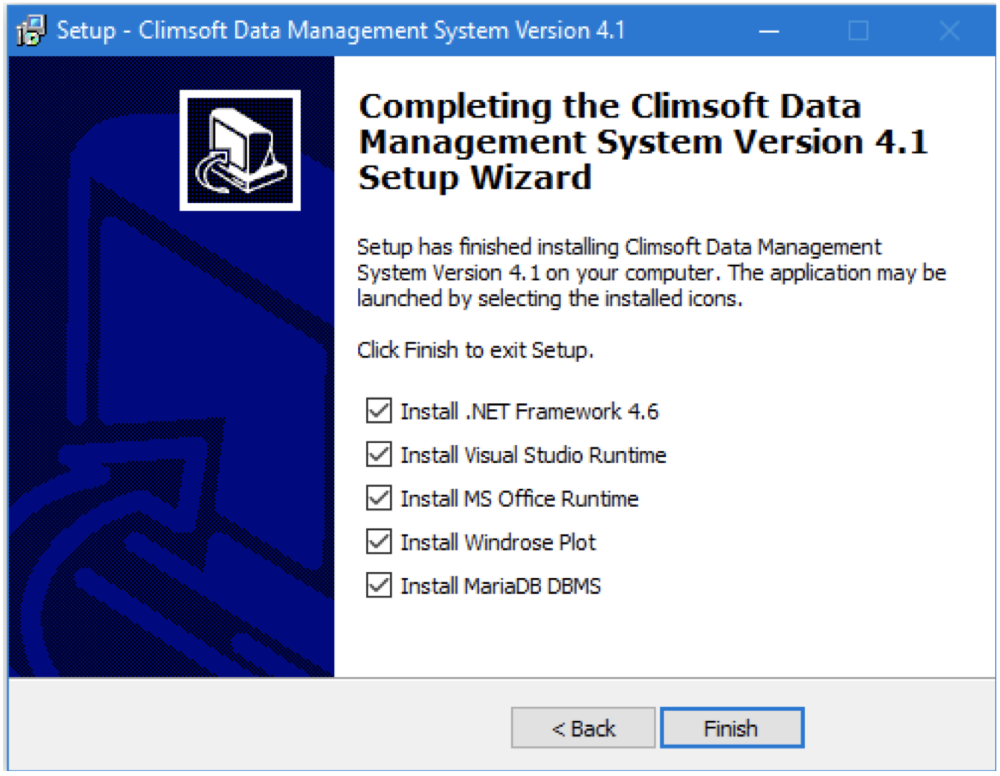
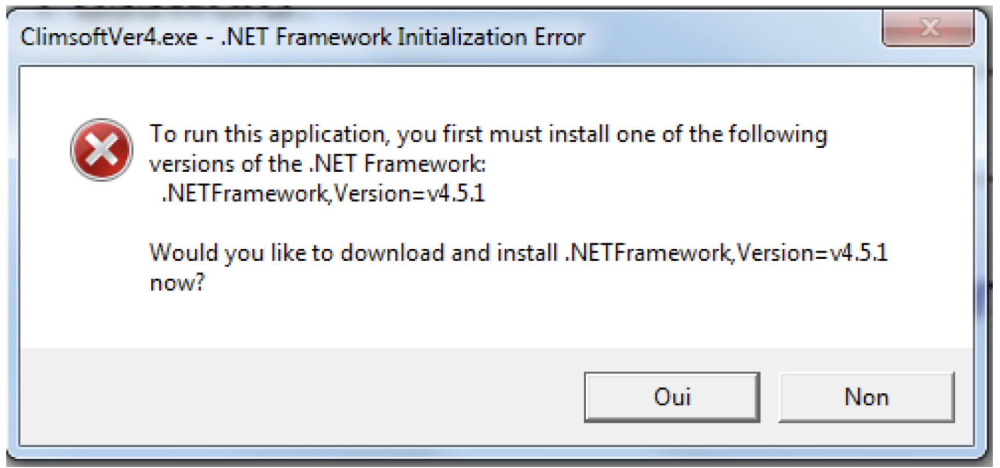
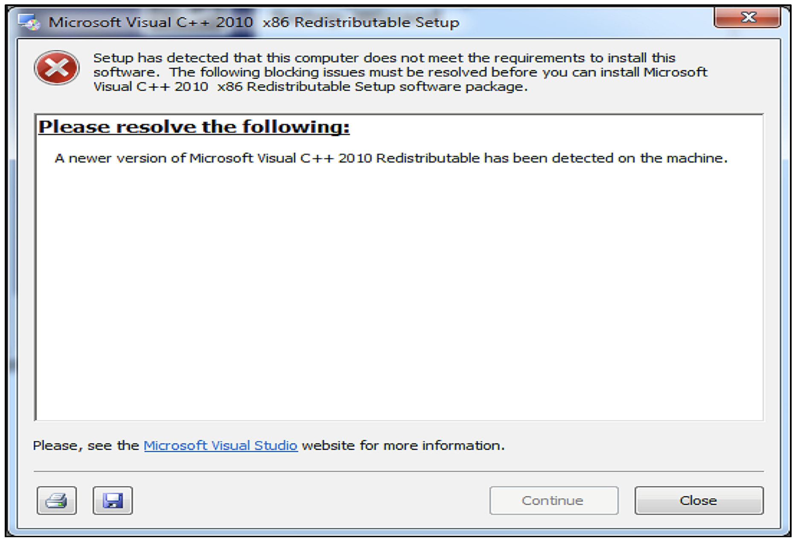
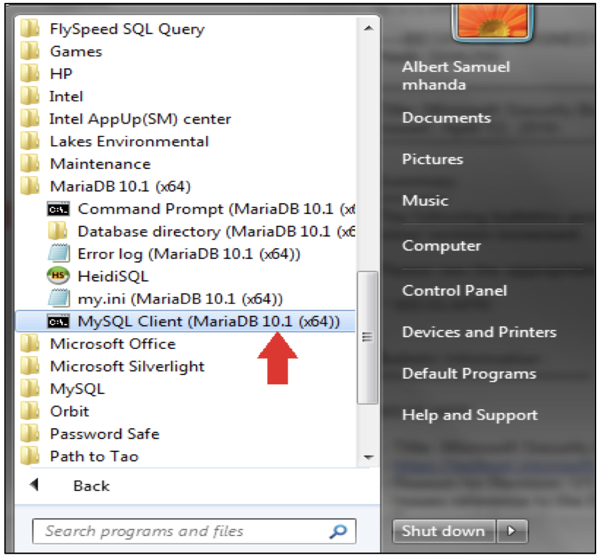
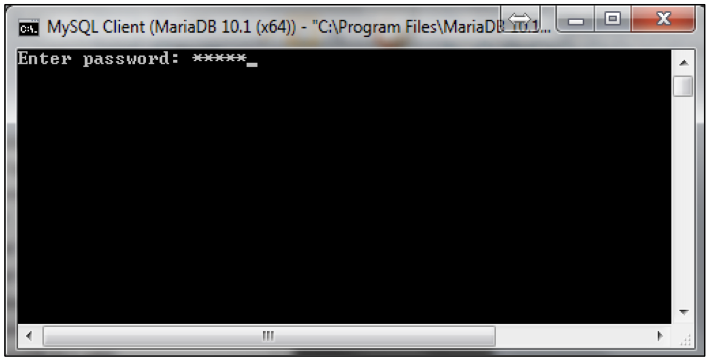
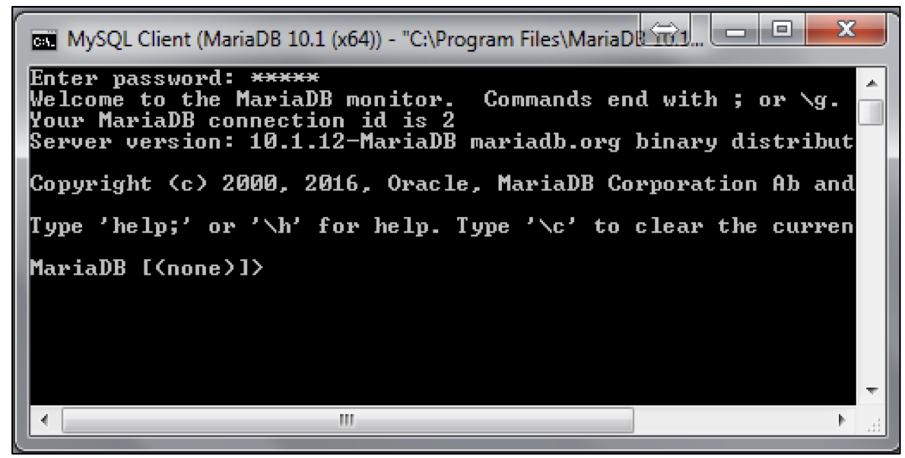

2 Installations
2.1 Configuration système requise
2.1.1 Spécifications matérielles
Le système Climsoft requiert les spécifications matérielles typiques suivantes : un PC avec une vitesse de processeur d’au moins 1 GHz, 2 Go de mémoire vive (RAM) et un espace disque suffisant pour l’installation du logiciel d’application et le stockage de la base de données. Un minimum de 20 Go d’espace disque est recommandé. Un espace disque plus important sera nécessaire pour le stockage des données provenant des stations météorologiques automatiques ainsi que les images des documents (archives) papier. Cependant, l’idéal serait de stocker les images des documents papier sur des supports de stockage amovibles tels que des disques durs externes ou sur un lecteur réseau. Une connexion Internet est également souhaitable.
2.1.2 Spécifications logicielles
Pour une performance optimale de la base de données, il est recommandé d’utiliser le système d’exploitation (OS) Microsoft Windows 7 ou supérieur, 64 bits. Climsoft Version 4 est compatible avec les systèmes d’exploitation Windows suivants : XP, Vista, Windows 7, Windows 8.x et Windows 10. Pour une bonne installation il vous faut tout au moins les applications suivantes :
Microsoft Office avec le tableur Excel est requis car le tableur Excel est l’application par défaut pour l’affichage des produits de données de Climsoft ;
Un Logiciel antivirus ;
La version minimale .Net Framework 4.5 est requise. Cette version de .NET Framework est fournie avec le paquet d’installation de Climsoft ;
Le paquet d’installation de Climsoft disponible ici
Le système de base de données MariaDB/MySQL et les scripts de base de données de Climsoft sont également fournis par le programme d’installation de Climsoft et seront copiés dans le sous-dossier appelé “dbase” dans le chemin d’installation ;
Le logiciel WRPlot pour produire les graphiques “rose de vent” qui sera copié dans le sous-dossier appelé “Bin” dans le chemin d’installation.
2.2 Procédures d’installation
Avant d’entamer les procédures d’installation, veuillez tout d’abord vous assurer que votre PC répond aux exigences matérielles et logicielles avant d’installer Climsoft. Vous devez également disposer des privilèges d’administrateur de Windows pour pouvoir installer Climsoft.
Il existe deux paquets d’installation pour Climsoft, l’un pour le système d’exploitation Windows 32 bits et l’autre pour le système d’exploitation 64 bits. Prendre le soin de bien choisir le paquet d’installation qui correspond à votre système d’exploitation. Il est bien vrai que les ordinateurs les plus récents sont de 64 bits, mais il convient de vérifier. En cas de besoin, bien vouloir consulter ce lien.
Les étapes clés de l’installation sont les suivantes :
Exécutez le fichier exécutable de l’installation avec des privilèges élevés. Pour ce faire, faites un clic droit sur le fichier d’installation et choisissez “Exécuter en tant qu’administrateur” dans le menu contextuel. Pour rappel, “climsoftV4_bit32_setup.exe” est destiné aux systèmes d’exploitation 32 bits et “climsoftV4_bit64_setup.exe” est destiné aux systèmes d’exploitation 64 bits. L’assistant d’installation vous guidera tout au long du processus.
Lorsque l’installation de base de Climsoft est terminée, une boîte de dialogue avec des options pour l’installation d’applications supplémentaires requises par Climsoft apparaîtra comme indiqué dans la ci-dessous :

Si au préalable certaines des applications listées sont déjà installées sur votre ordinateur, vous pouvez simplement décocher les applications en question. Il y’a la possibilité de les installées plutard en décochant. Si le cas, vous trouverez leur programme d’installation dans le dossier ‘bin’ du chemin d’installation.
Par défaut, les applications tierces listées seront installées automatiquement dans l’ordre. Toutefois, si la version de Microsoft .Net Framework sur votre ordinateur est très ancienne et nécessite une mise à jour, l’assistant d’installation vous permettra de le faire simplement. Dans ce cas spécifique vous aurez le message d’erreur suivant contenant une invite à mettre à jour Microsoft .NET Framework :

Si une boîte de dialogue avertissement s’ouvre en indiquant que vous avez déjà une version plus récente de l’une de ces applications, cliquez sur le bouton Fermer pour poursuivre l’installation de l’application suivante.
Par exemple la figure suivante montre en affiche une boîte de dialogue avec un avertissement indiquant qu’une version plus récente de Microsoft Visual C++ 2010 Redistributable a été détectée sur votre machine. Dans ce genre de situation, cliquez sur le bouton Fermer pour continuer l’installation de l’application suivante.

Aucours de l’installation de MariaDB, vous devez spécifier le numéro de port pour l’exécution du service MariaDB. il est fortement recommandé de choisir le port 3308, qui est le numéro de port défini dans le fichier de configuration de Climsoft pour la connexion à la base de données MariaDB. Si pour certaines raisons vous choisissez un numéro différent, vous allez devoir reconfigurer la connexion à la base de données pour que le numéro de port soit le même que celui que vous aurez choisi.
Il est également important de noter que le mot de passe que vous avez défini pendant l’installation et la configuration de MariaDB sera requis lorsque vous vous connecterez à Climsoft pour la première fois.
Si vous êtes invité à redémarrer l’ordinateur avant que toutes les installations sélectionnées soient terminées, veuillez choisir “redémarrer plus tard” puis redémarrer l’ordinateur lorsque toutes les installations seront terminées.
Si l’installation de WRPlot prend anormalement trop de temps, vérifiez la présence d’une deuxième fenêtre d’installation qui le plus souvent est minimisée en bas de la barre des tâches et nécessite une approbation de votre part. Si cette boîte de dialogue est présente, ouvrez-la et répondez comme il se doit.
Bien que WRPLot soit un freeware, vous avez besoin d’une clé de licence pour l’activer. Une clé de licence initiale, valable un an, est contenue dans le fichier “WRPLot_license.txt” dans le sous-répertoire “Bin” du dossier d’installation de Climsoft. En cas de besoin vous pouvez renouveler votre licence en vous enregistrant sur cette page.
Au besoin si vous souhaitez (ré)installer MariaDB ou WRPLot plus tard, les fichiers d’installation de ces applications se trouvent dans le sous-dossier “Bin” du dossier d’installation de Climsoft.
2.3 Création de BDD Climsoft dans MariaDB
Après avoir installé avec succès Climsoft ainsi que toutes les applications tierces notamment MariaDB, vous allez devoir créer la BDD Climsoft (les tables, et les relations entre elles). Pour ce faire un script SQL est mis à votre disposition. Par défaut, il se trouve dans le sous-répertoire “Dbase” du répertoire d’installation de Climsoft. Pour exécuter le script en question, suivez scrupuleusement les étapes ci-après :
- Lancez la console MariaDB à partir du Menu Démarrer de Windows en cliquant sur le client MySQL (MariaDB 10.x) comme indiqué voir la figure ci-dessous. Vous pouvez également taper “MariaDB” dans le champ de recherche. Il est important de noter que la boîte de dialogue obtenue peut être légèrement différente, selon la version de Sytème d’exploitation Windows.

- Une fenêtre va s’ouvrir vous invitant à taper un mot de passe pour accéder à MariaDB, en fait il s’agit du mot de passe créé pendant son installation. Il faut garder à l’esprit que le nom d’utilisateur est “root” et qu’il va falloir garder jalousement ce mot de passe.

Si le mot de passe tapé est le bon, la fenêtre suivante s’ouvrira. Il s’agit de l’invite de commande de MariaDB.

En supposant que le fichier script pour la création de la base de données de Climsoft version 4 (Climsoftv4) se trouve dans le chemin “C:\Program Files (x86)\ClimsoftV4\Dbase”. Il s’y trouve par défaut.
- Tapez la commande suivante à l’invite :
“Source C:\Program Files (x86)\Climsoftv4\Dbase\mariadb_climsoft_db_v4_all.sql”
Si vous avez tapé la commande correctement, le script créera les bases de données de la version 4 de Climsoft : Deux (2) bases de données sont créées, la base de données opérationnelle (mariadb_climsoft_db_v4) et la base de données de test qui contient des données à des fins de test (mariadb_climsoft_test_db_v4).
- Pour contrôler ou vérifier que les bases de données de Climsoft Version 4 ont été créées dans le moteur de base de données MariaDB, tapez : “
Show databases;” dans l’invite du client MariaDB et appuyez sur la touche Entrée. Les 2 bases de données Climsoft seront alors listées avec les autres schémas de base de données fournis avec MariaDB.